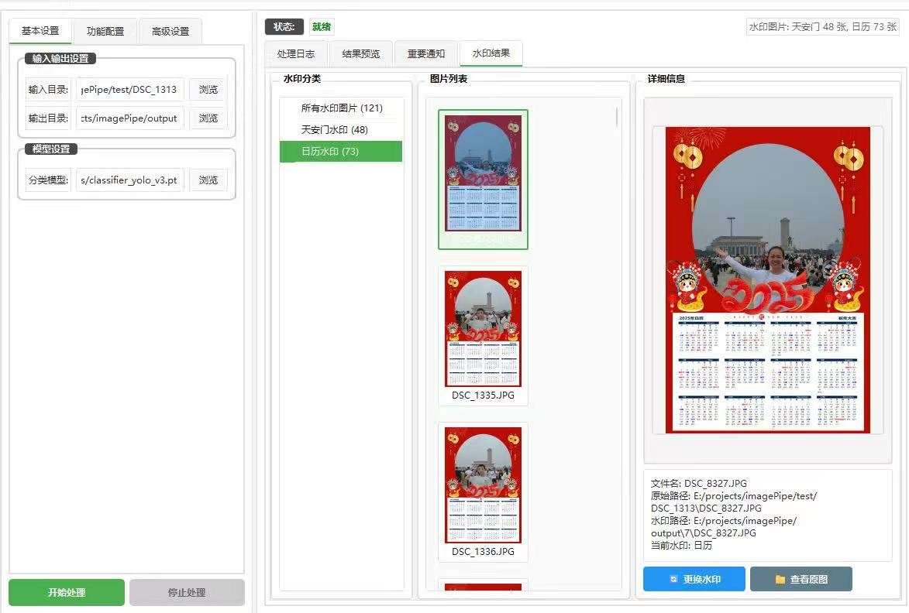

Overview
ImagePipe is a production-grade computer vision pipeline designed for tourism photographers and studios that process thousands of photos per session. It identifies the people in each shot, detects common issues such as closed eyes or poor framing, restores low-quality faces with a custom generative model, and organizes the final results by person — all in one continuous batch workflow.
Demo
ImagePipe ships as a standalone desktop application with both a graphical interface for studio operators and a headless command-line mode for automated workflows. The screenshots below show the end-to-end processing pipeline and the operator-facing UI.


Key Features
Photo Classification
YOLOv8-powered classifier filters and tags photos by content type, removing obvious duplicates and low-quality shots before downstream processing.
Face Detection & Recognition
InsightFace Buffalo_L embeddings provide robust face localization and identity features that work across lighting and pose variation.
Person Clustering
DBSCAN clustering groups faces by identity across an entire photo set — no labels required — enabling per-person album generation.
Eye-State Detection
MediaPipe landmarks flag photos with closed or partially closed eyes for automatic correction or operator review.
Generative Eye-Opening
A custom U-Net with attention restores naturally open eyes on flagged photos, salvaging otherwise unusable shots.
Batch Processing
Lazy image loading, garbage collection, and ThreadPoolExecutor parallelism keep memory bounded across 1000+ image batches.
Processing Pipeline
Each batch flows through a fixed sequence of stages, with intermediate state cached to disk to keep peak memory low.
- Ingest & classify — YOLOv8 tags photos and discards rejects.
- Detect faces — InsightFace localizes every face and extracts Buffalo_L embeddings.
- Cluster by identity — DBSCAN groups embeddings into per-person clusters.
- Evaluate eye state — MediaPipe landmarks flag closed-eye candidates.
- Restore — the U-Net + attention model regenerates open eyes on flagged faces.
- Organize & export — processed images are written into per-person folders with full provenance.
Architecture
ImagePipe follows a strict three-layer separation so the UI, business logic, and ML models can evolve independently.
UI Layer — PyQt6
A desktop interface for non-technical operators with progress reporting, per-stage previews, and exportable run logs. A headless CLI mode shares the same processing core for automated server-side use.
Processing Core
Orchestrates the pipeline, handles I/O, and manages memory via a LazyImageLoader that streams images on demand. Parallelism is provided by ThreadPoolExecutor with per-stage timing instrumentation for profiling.
ML Model Layer
Each model (classification, detection, clustering, eye-state, restoration) is wrapped behind a uniform interface so it can be swapped or upgraded without touching the rest of the system.
Engineering Highlights
- Memory-efficient batch pipeline using LazyImageLoader and explicit garbage-collection strategies to prevent allocation failures on long runs.
- Parallel processing via ThreadPoolExecutor with comprehensive per-stage timing instrumentation for ongoing performance tuning.
- Cython compilation of hot paths and PyInstaller packaging for cross-platform, dependency-free distribution.
- Integrated license management for commercial deployment, with both GUI and headless command-line entry points.
- Modular three-layer architecture (UI / core / models) that keeps the ML stack swappable without touching the rest of the app.
Interested in ImagePipe or want to discuss the project in detail?
Reach out at haochengli2018@gmail.com